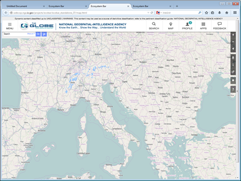
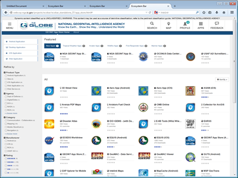

|

|

|
| |
|
|
|
Version 3.3 Feature Enhancements
- Converted ECOBAR into a JQUERY plugin
- Introduced white background to improve legibility and showcase logo
- Introduced grey contrast for page classification
- Implimented responsive behavoir to page classification
- Added names to the 5 icons
- Added branding to the 5 icons
- Implimented new logo option
- Made new logo responsive
- Added JQUERY slider menu that floats under Ecobar
- Tied slider behavior to the icon drop menus
- Jquery navigation with submenu items
- Unique icon set included with ECOBAR
- Search modal window
- Profile system with alerts and messages (requires future profile system)
- IAE selection menu
- Feedback selection menu
- Single image sprite for all Ecobar style
- Overall compressed sizes (minified)
- jquery.ecobar.js (19KB)
- ecobar.css (21KB)
- eco_sprite.png (196KB)
|
Standalone Implimentation
- The standalone ecobar is for developement only.
- Attached jquery.ecobar.js after you load jquery.
|
Production Implimentation
- Load jquery first.
- Interim solution = Attached to the ecobar from the following location:
- https://globe.nga.ic.gov/Style Library/Branding/ecobar/js/ecobar.min.js
- Final solution = Attached to the ecobar from the following location:
- https://cdn.globe.nga.ic.gov/ecobar/jquery.ecobar.js
- CDN solutions being developed for release 1.4
|
| |